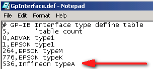
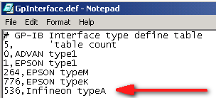

|
Before |

After |
Service History
Subject: How to change Tester Interface name for GPIB in NS-8000 series
Handler Model: NS-8000 series
Controller: RC520
Date: Jan 2009
Purpose
To change Tester Interface name for GPIB in NS-8000 series HMI.
Action
1) Close HMI.
2) Open C:\NS8000\config\Table\GpInterface.def (using Notepad).
3) Edit the GPIB's tester interface name that is required.
4) Save GpInterface.def and close.
eg.
"536,EPSON typeI" change to "536,Infineon typeA"
|
Before |

After |
Remarks
For existing setup files, need to update the individual setup file by reselecting the new tester interface name(DeviceSet->Tester I/F->Setting) so that new tester interface can be refresh on the HMI windows.
With HMI F8.12-SIS, Tester Interface name is updated for INFINEON typeA.
HMI F10.14-SIS already include the Tester Interface name INFINEON typeA
Also take note that in C:\NS8000\Log\Product.dat,
Model name must to NS-8040 if not there will be communication time out during online.
Model NS-8040
Serial Number 151244
Factory EPSON-Z
Version F8.12-SIS